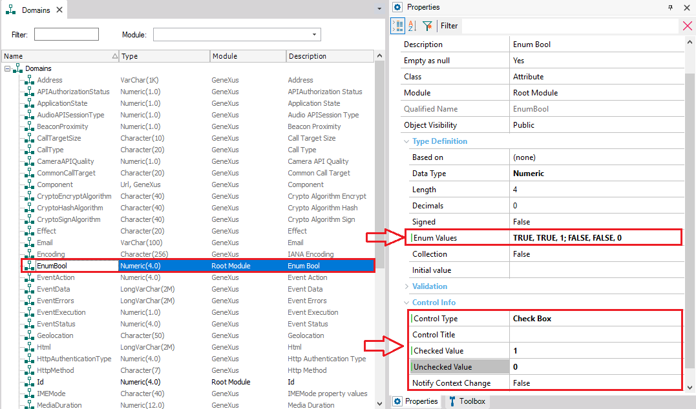
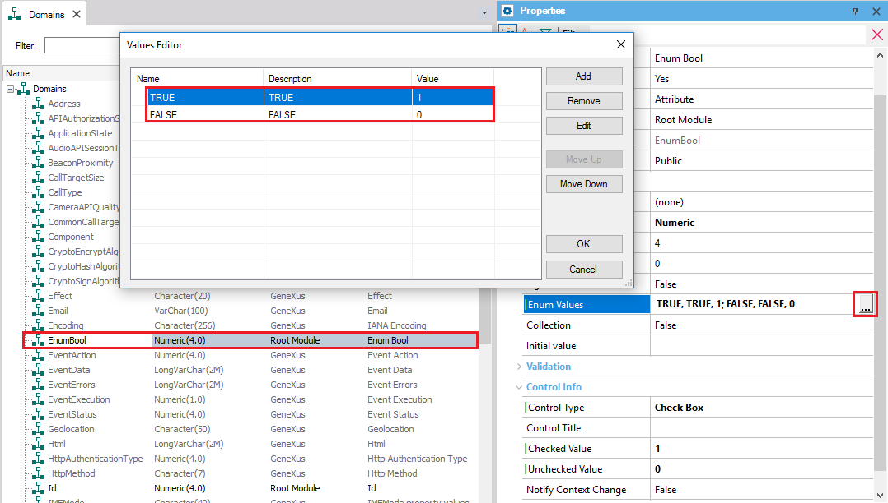
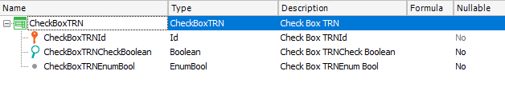
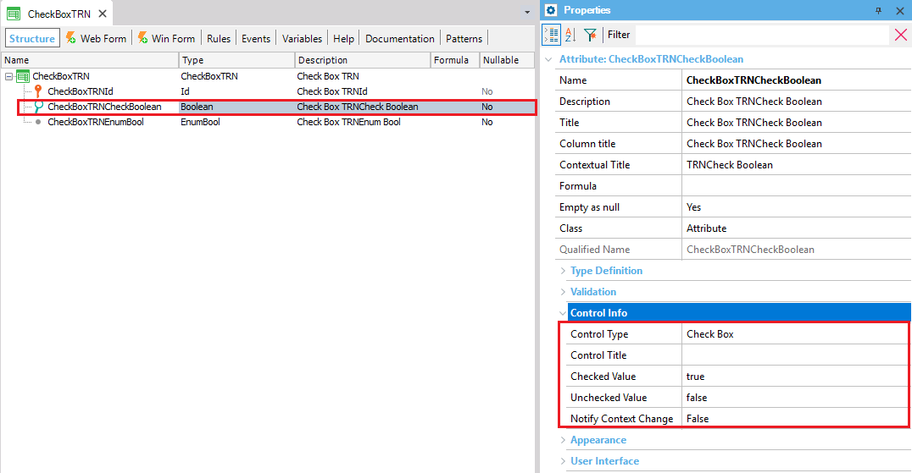
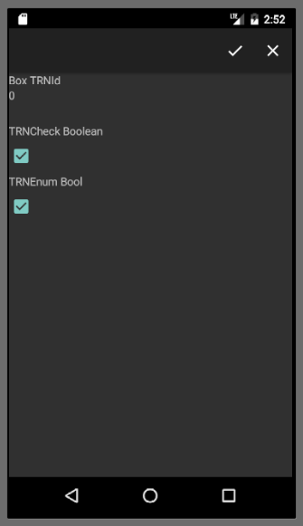

Check Box is a control applied for Win, Web and SD applications. It is used to show two possible values for a variable or attribute, in a checked-unchecked way. In this tutorial we will explain how to use a Check Box in Smart Devices with a simple example. Properties
ExampleFor this example we will define a domain called "EnumBool", defined as follows:  Definiton of the values in the domain is made in the Enum Values property as shown in the next image:  In the images from above we can see that the properties Checked and Unchecked have been set to coincide with the default, but it could be set as we want. The transaction we are going to use for this example is the next one with the Work With for Smart Devices pattern applied (see Applying Work With for Smart Devices Pattern).  Take a look at the properties of the CheckBoxTRNCheckBoolean:  All done! All we have to do now is hit F5 and see the results. ExampleAndroid 
|